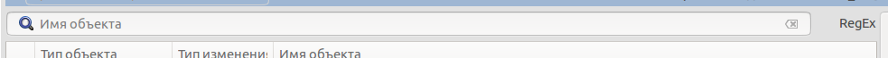
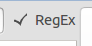
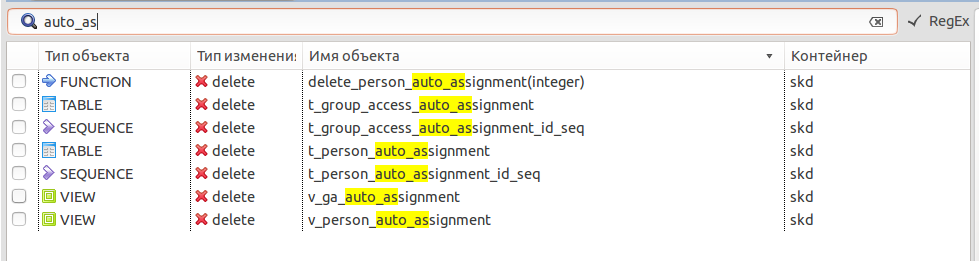
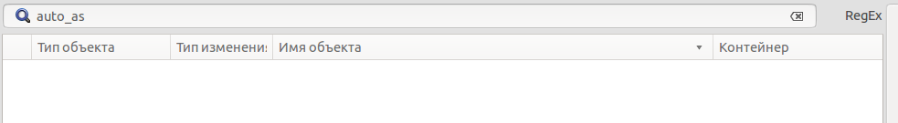
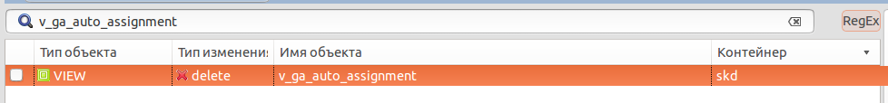
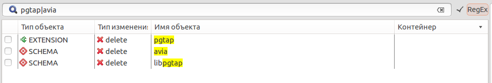

Для поиска объектов используется текстовое поле над таблицей объектов.

Для этого в текстовое поле необходимо ввести ключевое слово, которое представляет из себя название или часть названия объекта.
Если флаг "RegEx" включен , то поиск происходит по маске, которая представляет из себя часть имени объекта. Например если введем строку "auto_as" в поле поиска, то мы получим все объекты, имена которых содержат "auto_as"

Желтым цветом показываюся совпадения имени объектов с ключевым словом.
Если флаг "RegExp" выключен, то ищутся точные совпадения. В таком случае в результате поиска "auto_as" результат будет нулевой.

Необходимо указать точное название объекта.

Для поиска по нескольким ключевым полям необходимо ввести их через символ "|" без пробелов и каких либо других символов. Например, строка может выглядеть примерно так "pgtap|avia". В зависимости от включения флага "RegEx" результат поиска поиска будет отличаться.
